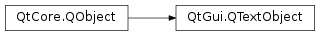

QTextObject¶
Inherited by: QTextBlockGroup, QTextList, QTextFrame, QTextTable
Synopsis¶
Functions¶
- def
document() - def
format() - def
formatIndex() - def
objectIndex() - def
setFormat(format)
Detailed Description¶
The
PySide2.QtGui.QTextObjectclass is a base class for different kinds of objects that can group parts of aPySide2.QtGui.QTextDocumenttogether.The common grouping text objects are lists (
PySide2.QtGui.QTextList), frames (PySide2.QtGui.QTextFrame), and tables (PySide2.QtGui.QTextTable). A text object has an associatedPySide2.QtGui.QTextObject.format()andPySide2.QtGui.QTextObject.document().There are essentially two kinds of text objects: those that are used with blocks (block formats), and those that are used with characters (character formats). The first kind are derived from
PySide2.QtGui.QTextBlockGroup, and the second kind fromPySide2.QtGui.QTextFrame.You rarely need to use this class directly. When creating custom text objects, you will also need to reimplement
QTextDocument.createObject()which acts as a factory method for creating text objects.
-
class
PySide2.QtGui.QTextObject(doc)¶ Parameters: doc – PySide2.QtGui.QTextDocumentCreates a new
PySide2.QtGui.QTextObjectfor the givendocument.Warning
This function should never be called directly, but only from
QTextDocument.createObject().
-
PySide2.QtGui.QTextObject.document()¶ Return type: PySide2.QtGui.QTextDocumentReturns the document this object belongs to.
See also
-
PySide2.QtGui.QTextObject.format()¶ Return type: PySide2.QtGui.QTextFormatReturns the text object’s format.
-
PySide2.QtGui.QTextObject.formatIndex()¶ Return type: PySide2.QtCore.intReturns the index of the object’s format in the document’s internal list of formats.
See also
-
PySide2.QtGui.QTextObject.objectIndex()¶ Return type: PySide2.QtCore.intReturns the object index of this object. This can be used together with
QTextFormat.setObjectIndex().
-
PySide2.QtGui.QTextObject.setFormat(format)¶ Parameters: format – PySide2.QtGui.QTextFormatSets the text object’s
format.See also
© 2018 The Qt Company Ltd. Documentation contributions included herein are the copyrights of their respective owners. The documentation provided herein is licensed under the terms of the GNU Free Documentation License version 1.3 as published by the Free Software Foundation. Qt and respective logos are trademarks of The Qt Company Ltd. in Finland and/or other countries worldwide. All other trademarks are property of their respective owners.